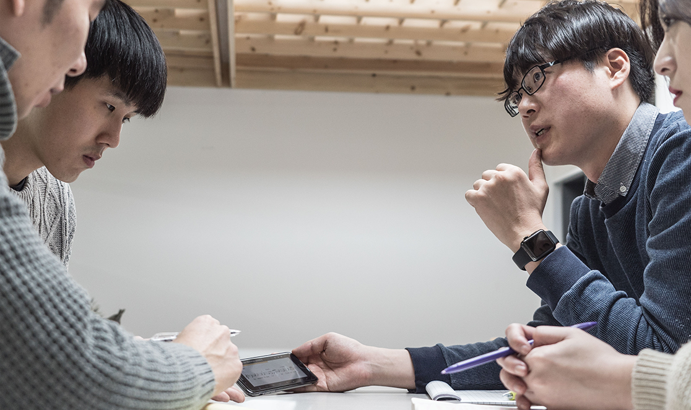
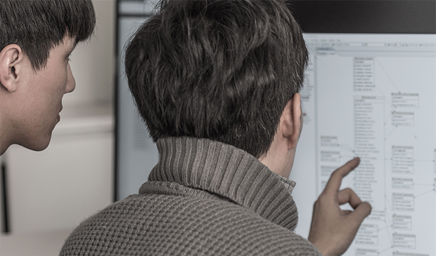
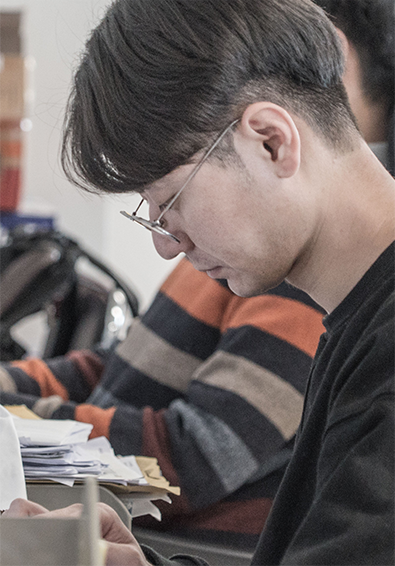

Creating something at all times is our task.
We spend most of our time during each daily task making something and re-make the found something into something better.
Creating may be similar to dreaming.


In that sense, we dream everyday in the office. Dream of making a better cotents Dreaming of releasing a better service And, the dream of finding answers of problems not solved dramatically.
Among those dreams, sharing our dreams with all the people around the world is included.
Dream of sharing the difficulties we felt in the past with many people around the world, solving difficulties using the service we made and finally making people who use our service happy.
Dream of sharing the difficulties we felt in the past with many people around the world, solving difficulties using the service we made and finally making people who use our service happy.
We dream such dreams everyday. That is the very work we do at our desks.